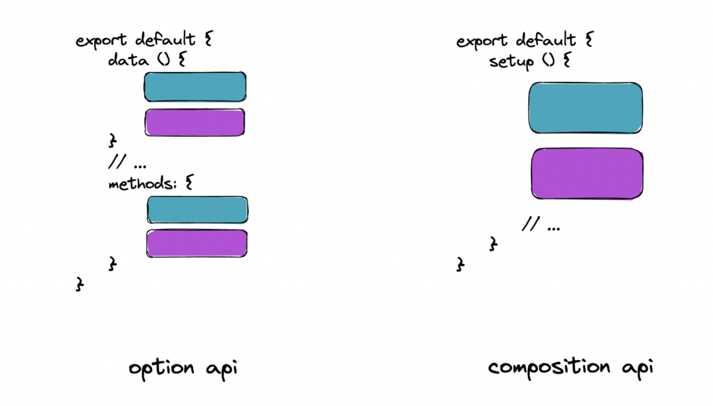

Vue
Vue是一个用于构建用户界面的渐进式框架
通过 CDN 使用 Vue
*CDN（Content Delivery Network）是一个分布式服务器网络，能够快速向用户交付静态资源（如 JavaScript、CSS、图片等）。
这种方法比较简便，适合快速原型开发或小型项目。
全局构建：
1 |
|
ES 模块构建：
1 |
|
创建 Vue 应用
打算创建项目的目录打开命令行运行以下命令：
1 | npm create vue@latest |
选择功能后运行以下命令：
1 | cd <your-project-name> |
删掉一些文件和代码恢复到初始空白页面，目录大致如下：
1 | your-project: |
选项API与组合API
- 选项API，
data选项写数据，methods选项写逻辑，代码分散。 - 组合API，数据、逻辑和其他都在
setup内写，代码集中，利于维护。

*本学习笔记选择组合API
setup
setup 是 Vue 3 组合式 API（Composition API）的核心函数，是组合式逻辑的入口。在组件初始化时执行，早于 beforeCreate 和 created 生命周期钩子。setup 中访问 this 是 undefined。
- 传统
<script>语法
在传统的<script>语法中，setup是一个函数，需要显式定义。1
2
3
4
5
6
7
8
9
10
11
12
13/* APP.vue */
<script>
export default {
name: "App",
setup() {
console.log("setup执行了");
return {
// 返回的对象中的属性和方法可以在模板中使用
message: "Hello, Vue 3!",
};
},
};
</script> <script setup>语法糖
在这种语法中，setup是隐式的。所有顶级绑定（变量、函数等）都会自动暴露给模板。1
2
3
4
5/* APP.vue */
<script setup>
const message = "Hello, Vue 3!";
console.log("setup执行了");
</script>
ref 和 reactive
ref 创建
- 作用：定义响应式变量，可以是基本类型、对象类型。
- 语法：
let xxx = ref(初始值)。
JS中操作数据需要：xxx.value，但 <template> 中不需要 .value，直接使用。
对于let name = ref('张三')来说，name不是响应式的，name.value是响应式的。
1 | <script setup> |
reactive 创建
- 作用：定义一个响应式对象（基本类型要用ref）
- 语法：
let 响应式对象= reactive(源对象)。
JS无需 .value，直接通过属性名访问。
解构或赋值时可能丢失响应性，需用 toRefs 解决，把对象中的每一个属性做一次包装成为响应式数据。
⚠️reactive() 返回的是一个原始对象的 Proxy，它和原始对象是不相等的。
1 | <script setup> |
使用原则
- 若需要一个基本类型的响应式数据，必须使用ref。
- 若需要一个响应式对象，层级不深，ref、reactive都可以。
- 若需要一个响应式对象，且层级较深，推荐使用reactive。
标签的 ref 属性
用于注册模板引用。
- 通过 ref 获取某个 DOM 元素的引用，允许直接操作该 DOM 元素（每个 HTML 元素（如
<div>,<p>,<button>等）都对应一个 DOM 元素对象）。1
2
3
4
5
6
7
8
9
10
11
12
13
14
15
16
17
18
19
20
21
22
23
24
25
26
27
28
29
30<template>
<div>
<!-- 定义一个 ref 属性，绑定到 DOM 元素 -->
<!-- 表示我们要通过 inputElement 引用这个 input 元素 -->
<input ref="inputElement" type="text" placeholder="请输入文本" />
<button @click="focusInput">聚焦输入框</button>
</div>
</template>
<script>
import { ref } from 'vue';
export default {
setup() {
// 使用 ref 来获取 DOM 元素的引用
// 当组件渲染完成后，Vue 会自动把 input 元素绑定到这个引用上。
const inputElement = ref(null);
/* 定义一个方法，通过 ref 来操作 DOM 元素
inputElement 本身是一个对象，可以通过 .value 访问到实际的 DOM 元素
并调用其原生的 JS 方法 */
const focusInput = () => {
// 通过 .value 访问 DOM 元素并设置焦点
inputElement.value.focus();
};
return { inputElement, focusInput };
}
};
</script> - 通过 ref 获取到子组件的实例，允许调用子组件的方法或访问子组件的属性。
computed
创建计算属性的工具，基于响应式数据自动计算值，并且只有依赖数据变化时才重新计算。
1 | import { computed, ref } from 'vue'; |
watch
监听响应式数据变化，watch 会在其中任何一个数据变化时触发回调。watch('需要监听的数据',数据改变执行函数,配置对象)
- 监视ref定义的基本类型数据：直接写数据名即可，监视的是其
value值的改变。1
2
3
4
5const count = ref(0);
const name = ref("Alice");
watch([count, name], ([newCount, newName], [oldCount, oldName]) => {
console.log(`count: ${oldCount} -> ${newCount}, name: ${oldName} -> ${newName}`);
}); - 监视ref定义的对象类型数据：直接写数据名，监视的是对象的地址值，若想监视对象内部的数据，要手动开启深度监视。
- 监视reactive定义的对象类型数据，默认开启了深度监视，不需要显式设置。
1
2
3
4const user = ref({ name: 'Alice', age: 25 });
watch(user, (newValue, oldValue) => {
console.log('User changed:', newValue);
}, { deep: true }); - 监视ref或reactive定义的对象类型数据中的某个属性，一般写成函数形式。
1
2
3watch(()=>user.name,(newValue,oldValue)=>{
console.log('user.name changed:',newValue,oldValue)
},{deep:true}) - 立即触发：默认情况下，
watch只会在数据变化时触发回调。如果希望在创建时就立即执行一次回调，可以使用{immediate: true}。
生命周期
Vue组件实例在创建时要经历一系列的初始化步骤，在此过程中Vue会在合适的时机调用特定的函数，从而让开发者有机会在特定阶段运行自己的代码，这些特定的函数统称为：生命周期钩子。生命周期整体分为四个阶段，分别是：创建、挂载、更新、销毁，每个阶段都有两个钩子，一前一后。
Vue3的生命周期：
- 创建阶段：
setup - 挂载阶段：
onBeforeMount、onMounted（常用） - 更新阶段：
onBeforeUpdate、onUpdated（常用） - 卸载阶段：
onBeforeUnmount（常用）、onUnmounted
Hook 是允许在特定生命周期点插入自定义代码的机制。
1 | import { onMounted } from "vue"; |
父子通信
父子组件之间的通讯主要通过两种方式：props 和 emit。
- 父传子：
父组件：子组件 通过1
2
3
4
5
6
7
8
9
10
11
12
13
14
15
16
17// Parent.vue
<template>
<Child :message="parentMessage" />
</template>
<script>
import { ref } from 'vue';
import Child from './Child.vue';
export default {
components: { Child },
setup() {
const parentMessage = ref('Hello from Parent!');
return { parentMessage };
}
};
</script>props接收数据：1
2
3
4
5
6
7
8
9
10
11
12// Child.vue
<template>
<div>{{ message }}</div>
</template>
<script>
export default {
props: {
message: String
}
};
</script> - 子传父：
父组件 监听子组件触发的事件：子组件 通过1
2
3
4
5
6
7
8
9
10
11
12
13
14
15
16
17
18
19
20// Parent.vue
<template>
<Child @childEvent="handleChildEvent" />
</template>
<script>
import { ref } from 'vue';
import Child from './Child.vue';
export default {
components: { Child },
setup() {
const handleChildEvent = (data) => {
console.log('Received from child:', data);
};
return { handleChildEvent };
}
};
</script>emit触发事件并传递数据：1
2
3
4
5
6
7
8
9
10
11
12
13
14
15
16
17
18
19// Child.vue
<template>
<button @click="sendToParent">Send to Parent</button>
</template>
<script>
import { defineComponent } from 'vue';
export default defineComponent({
setup(props, { emit }) {
const sendToParent = () => {
emit('childEvent', 'Hello from Child!');
//第二个参数解构出emit函数，emits选项需要声明自定义事件名称
};
return { sendToParent };
}
});
</script> - 通过
provide和inject跨级传递